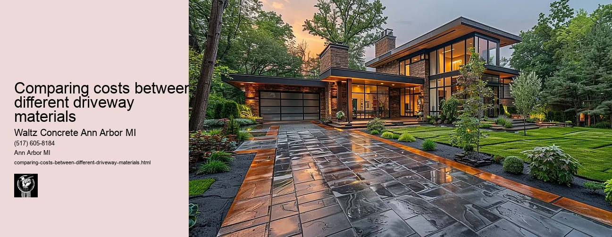

News
Concrete Driveway Installation Ann Arbor Mi
Concrete Driveway Installation Ann Arbor Mi
Choosing the right contractor for installation
Cost of concrete driveway installation in Ann Arbor
Permit requirements for driveway installation in Ann Arbor
The process and timeline of concrete driveway installation
Different types of concrete used in driveways
Maintenance and Repair of Concrete Driveways in Ann Arbor Mi
Maintenance and Repair of Concrete Driveways in Ann Arbor Mi
Preventive maintenance tips for durability
Common causes for concrete driveway damage
Professional companies offering repair services in Ann Arbor
Doityourself versus professional repairs
Costs associated with repairing a concrete driveway
Designs and Styles of Concrete Driveways in Ann Arbor Mi
Designs and Styles of Concrete Driveways in Ann Arbor Mi
Popular design trends for driveways
Considering climate factors when choosing a design or style
Unique customizations available for concrete driveways
Influence of home architecture on driveway design
Stamped stained and decorative options
Environmental Impact of Concrete Driveways in Ann Arbor Mi
Environmental Impact of Concrete Driveways in Ann Arbor Mi
Carbon footprint associated with concrete production
Use of sustainable materials in concrete driveways
Drainage considerations to reduce environmental impact
Local regulations regarding environmentally friendly driveways
Potential use of permeable or porous pavement
Alternatives to Concrete Driveways in Ann Arbor Mi
Alternatives to Concrete Driveways in Ann Arbor Mi
Asphalt driveways and their proscons
Paver stone driveways and their benefitsdrawbacks
Gravel or crushed stone as an alternative option
Comparing costs between different driveway materials
Resinbound surfaces as emerging technology
About Us
Contact Us

Comparing costs between different driveway materials
Comparing costs between different driveway materials
Title: A Comparative Analysis of the Costs between Different Driveway Materials
A driveway is not only an essential component of a home that provides a path for vehicles, but it also contributes to the overall aesthetic appeal of the property. Choosing the right material for your driveway can be quite challenging as it requires careful consideration of several factors such as durability, aesthetics, maintenance and most importantly, cost. This essay provides an insightful comparison of the costs associated with different driveway materials such as asphalt, concrete, gravel and pavers.
Asphalt driveways are one of the most popular choices among homeowners primarily due to their affordability. The average cost per square foot ranges from $2 to $5 making it a budget-friendly option. However, they require regular maintenance which includes sealing every 2-3 years to prevent cracks and prolong its lifespan.
On the other hand, concrete driveways are more durable and require less maintenance compared to asphalt. Although the initial installation cost can range from $5 to $10 per square foot - almost double that of asphalt - the longevity and minimal upkeep make it a worthwhile investment in the long run.
Gravel driveways offer an inexpensive alternative for those on a tight budget. These driveways typically cost around $1 to $3 per square foot, including installation. While gravel is easy on your wallet initially, keep in mind that this type of driveway requires frequent top-ups due to displacement from weather conditions or vehicle movement.
Paver driveways are certainly at the top end when it comes to pricing but they offer unparalleled aesthetic appeal and durability. Depending on material used (concrete or clay brick pavers), prices can range from $10 up to even $50 per square foot installed. Despite their higher costs upfront, paver driveways do not need constant attention or repairs like their counterparts.
While these prices provide a general estimate for each type of material, it's important to note that actual costs will often depend on factors like the size and shape of your driveway, local labor costs, and whether any additional work is required such as grading or drainage improvements.
In conclusion, when comparing costs between different driveway materials, homeowners must weigh their budget against other key considerations such as longevity, aesthetics and maintenance requirements. While asphalt and gravel driveways offer a cost-effective solution upfront, concrete and paver driveways can provide better value over time with their exceptional durability and low-maintenance characteristics. Ultimately, the best choice will depend on individual needs, preferences and financial capabilities.
Gravel or crushed stone as an alternative option
Comparing costs between different driveway materials
Frequently Asked Questions
What are the average costs of different driveway materials like concrete, asphalt, and gravel in Ann Arbor, MI?
The cost can vary greatly depending on the size of your driveway. On average, installing a concrete driveway in Ann Arbor may cost between $8 to $12 per square foot. Asphalt tends to be slightly cheaper with an average cost of $7 to $13 per square foot while gravel is usually the cheapest option ranging from $1 to $3 per square foot.
How do the durability and maintenance costs compare between concrete, asphalt, and gravel driveways?
Concrete driveways are highly durable and can last up to 30 years or more with proper maintenance. However, they may need resealing every few years which could add to the overall cost. Asphalt driveways typically last 15-20 years but require more frequent resealing than concrete. Gravel driveways are less durable but have lower initial and maintenance costs; however, they may require regular refilling due to displacement of stones.
Considering local weather conditions in Ann Arbor, MI, which driveway material offers the best value for money?
Given Ann Arbors cold winters that often include freezing and thawing cycles, a concrete driveway could be a better long-term investment as it is resistant to such weather conditions despite its higher upfront cost. However, if initial expense is a concern then an asphalt or gravel driveway might be considered although these will likely require more upkeep over time.
Comparing costs between different driveway materials